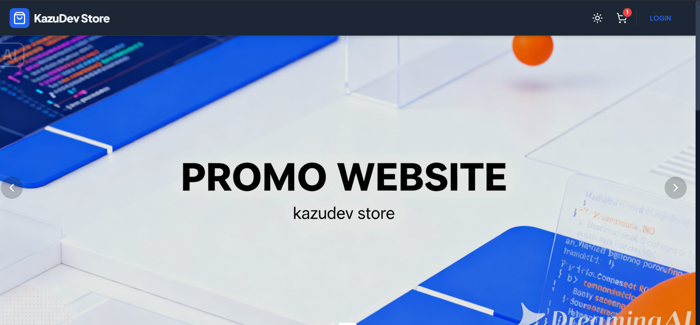

Proyek Terbaru Latest Projects
Beberapa karya dan proyek yang telah saya selesaikan. Some of the works and projects I have completed.

Website Task Manager Task Manager Website
Website untuk mengatur tugas-tugas telah dimasukkan oleh client tersebut dengan ambient dan gallery yang dibuat oleh saya sendiri. A website to manage tasks entered by the client, featuring a custom ambient vibe and gallery created by myself.

Website Portofolio V1 Portfolio Website V1
Project Website Portofolio Versi 1 yang dibuat dengan Gemini Pro dan di edit sendiri oleh saya atau Nouva Prasetya Ardhana. Portfolio Website Version 1 project built with Gemini Pro and edited personally by me, Nouva Prasetya Ardhana.


Website E-commerce E-commerce Website
Project Website E-commerce untuk menjual website-website yang saya buat dan sebagai alat transaksi Jasa KazuDev. An E-commerce website project to sell the websites I build and serve as a transaction platform for KazuDev Services.

Website Kisi-Kisi Ujian Sekolah School Exam Prep Website
Project Website Kisi-Kisi Ujian Sekolah yang bertujuan untuk membantu para siswa belajar secara daring untuk Ujian Sekolah, Website tersebut berisikan kisi-kisi dan latihan soal. A School Exam Preparation website aimed at helping students study online for their School Exams. It contains study guides and practice questions.